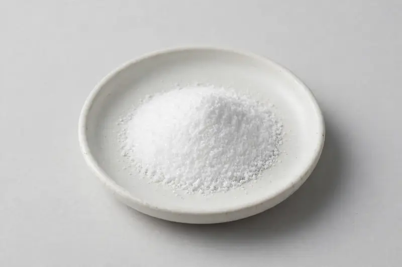

Betaine (trimethylglycine) — an anhydrous betaine powder supplied for sports-nutrition and functional formulation work.

Overview
Betaine, also called trimethylglycine, is a small zwitterionic molecule traded as a white crystalline or granular powder. Sports-nutrition buyers specify it for pre-workout, intra-workout and recovery-oriented powder systems, where flow, solubility and taste neutrality matter as much as assay. We are a Xi'an-based trading company sourcing through vetted partner producers; you share the target spec and we confirm feasibility honestly before committing anything.
Specifications below reflect commonly requested options in the market — not a stock list. Share your target spec and we'll confirm exactly what we can supply, honestly.
| Specification | Details |
|---|---|
| Botanical identity | Betaine (trimethylglycine), anhydrous crystalline/granular powder |
| Marker compound | Betaine (trimethylglycine) — commonly requested: 96-99% anhydrous (titration or HPLC) |
| Appearance | Fine powder, color typical of the extract |
| Mesh size | Typically 80–100 mesh (confirm per inquiry) |
| Testing | COA/TDS arranged on request; scope agreed per your spec |
Applications
Documentation
We don't claim in-house labs or certifications we don't hold. COA and TDS documents can be arranged on request, and testing scope is agreed against your specification before supply.
FAQ
Related products
Trigonella foenum-graecum
Key marker: Saponins
View specs →Vitis vinifera
Key marker: OPC / Proanthocyanidins
View specs →Zingiber officinale
Key marker: Gingerols
View specs →Theobroma cacao
Key marker: Theobromine 10-20%
View specs →Codonopsis pilosula
Key marker: 10:1 or polysaccharides
View specs →Send your target spec and volumes — we'll respond with a tailored quotation.
Request a Quote